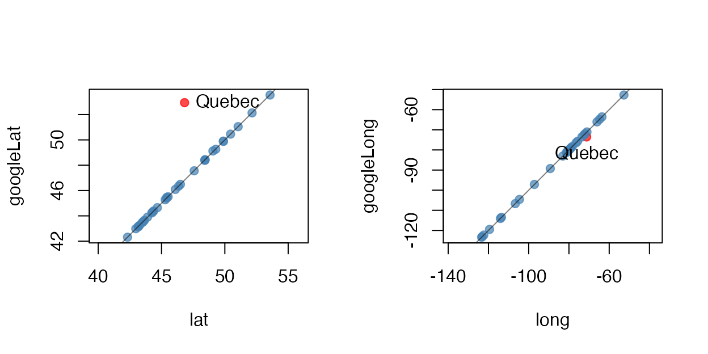
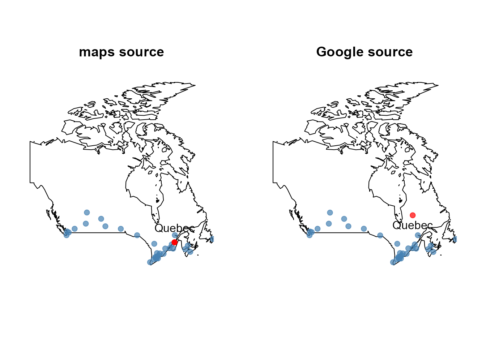

minorities.Rmdminority dataHere we look at a brief exploratory analysis of some Statistics Canada data on the distribution of ``visible minorities’’ within 33 Canadian cities. All descriptions of minorities are taken from Statistics Canada (though shortened here sometimes to aid the displays).
The data are part of the loon package and can be accessed through the data(...) command.
The data are arranged as a data.frame of nrow(minority) = 33 Canadian cities with ncol(minority) = 18 measurements on each. The first 14 variates are Statistics Canada census numbers of people according to a declared visible minority together with the population of that city. The possibilities are
## [1] "Arab"
## [2] "Black"
## [3] "Chinese"
## [4] "Filipino"
## [5] "Japanese"
## [6] "Korean"
## [7] "Latin.American"
## [8] "Multiple.visible.minority"
## [9] "South.Asian"
## [10] "Southeast.Asian"
## [11] "Total.population"
## [12] "Visible.minority.not.included.elsewhere"
## [13] "Visible.minority.population"
## [14] "West.Asian"For example, here are the counts for three Canadian cities (3 rows of minority) from across Canada:
| Victoria | Ottawa-Gatineau | St. John’s | |
|---|---|---|---|
| Arab | 500 | 28195 | 190 |
| Black | 2360 | 45060 | 620 |
| Chinese | 12330 | 32445 | 990 |
| Filipino | 2760 | 7330 | 155 |
| Japanese | 2280 | 1800 | 65 |
| Korean | 1235 | 2280 | 45 |
| Latin.American | 1845 | 10630 | 320 |
| Multiple.visible.minority | 930 | 4540 | 25 |
| South.Asian | 7210 | 27130 | 890 |
| Southeast.Asian | 1585 | 11670 | 55 |
| Total.population | 325060 | 1117120 | 179270 |
| Visible.minority.not.included.elsewhere | 260 | 1720 | 40 |
| Visible.minority.population | 33870 | 179295 | 3460 |
| West.Asian | 575 | 6490 | 65 |
The remaining variates provide the geographic location of each city. The latitude and longitude of the cities were determined in two ways. First, the data in canada.cities from the maps package was used. This produced the minority variates lat' andlong’. The second approach was to use the Google maps API to geocode the city names; the resulting coordinates are the variates googleLat and googleLong.
To see if they agree we plot them against one another.

Note the disagreement over the location of the city of Quebec. A check against a map reveals

The Google values are wrong. It seems that the geocoded Google values picked up the province of Quebec and not to the city of Quebec! Something to be wary of when searching any database
loon
We now use the loon package to explore this data with some interactive tools.
We begin by looking at the distribution of population across these cities.
We first look at the populations of the different cities:
hTotPop <- with (minority, ## Using the "with" function
## makes for easier reading
l_hist(Total.population,
title = "33 Canadian cities"
)
)
## Save the histogram structure
## to work with later from the
## command lineThe distribution of the Total.population is skewed with a heavy right tail. Most Canadian cities have a relatively small population. A few cities, one in particular, has a relatively large population.
Note, that this histogram has very little in the way of annotation. This can be changed interactively by making various selections in the loon inspector. Try a few of these out and observe the results in the histogram. You may also make some selections in the histogram itself. Holding the shift key down while making a selection results in a ``sticky’’ selection that allows multiple items to be selected.
Exercise: Check the show stacked colors box in order to see the bar colours. Select the two histogram bars corresponding to the three most populous cities. Change the colour of these cities to some different colour selected from the Modify section. Select the none button to unhighlight the bars and reveal the modified colour.
Given that population totals vary so much, it might be more meaningful to look at each visible minority as its percentage of the city’s population.
# Reduce the minority data to percents of the total population
# in each city.
#
minorityPercent <- data.frame(100*minority[,c(1:10,12:14)]/minority[,"Total.population"])
# Take the opportunity to shorten the Statistics Canada
# names of the minorities as well:
names(minorityPercent) <- c("% Arabic", "% Black", "% Chinese",
"% Filipino", "% Japanese",
"% Korean", "% Latino", "% Multiple",
"% S. Asian", "% SE Asian", "% Other",
"% Minority", "% W Asian")We begin by looking at the total visibility minority percentage. Again a histogram is drawn, this time though many of its display values are specified at creation. Note that the linkingGroup is specified to be the string "minority". This could have been any string – it merely identifies that this histogram will have its display linked with any other plot in the same linkingGroup .
# The proportion of the city population that is a "visible minority"
l_hist(minorityPercent$"% Minority",
title = "% Minority in 33 Canadian cities",
xlabel = "percent of population",
linkingGroup = "minority",
yshows = "frequency",
showBinHandle = FALSE,
showGuides = TRUE,
showScales = TRUE
)As can be seen, the visible minority population most of these cities is less than 20% of its total population. But for two cities nearly half of the population is from some visible minority.
One might hypothesize that these two cities are the largest two. To test this we add the first histogram to the ‘linkingGroup’ of the second. This can be done from the loon inspector for the total population histogram or programmatically from the command line as
In either case the displays must be synchronized (sync) within the group. Here we choose to push the linked elements of the total population histogram hTotPop out to the other members of the group. Checking the show stacked colors in both histograms will reveal their shared colours. Alternatively, use selection on each histogram.
As can be seen from the linked histograms, the two largest cities are not the two cities with the largest percentage of visible minorities. And conversely, the two cities having the largest visible miinorities are not the two largest cities. However, selecting the largest of either will show through the linked displays that it is also the largest of the other. Less than 20% of the second largest city are visible minority.
It might be interesting to begin by looking at the percent visible minority in each city for the top three (say) visible minorities (in total):
# Now show the same for the three minority groups
# having largest percentages (in decreasing order):
groups <- names(minorityPercent)[-c(12, 14, 15)]
largest3 <- names(sort(apply(minorityPercent[,groups ],
2, max),
decreasing = TRUE)
)[1:3]and plot histograms of them
# And now plot them
for (x in largest3) {
l_hist(minorityPercent[,x],
title = x,
xlabel="percent of population",
linkingGroup="minority",
showScales=TRUE,
showGuides=TRUE,
showStackedColors =TRUE
)
}In decreasing order the largest three visible minorities Chinese'',South Asian’‘, and ``Black’’.
Looking at the \% Chinese'' histogram one city has nearly 20\% of its population beingChinese’‘. It is the third largest city in the country.
In contrast, the city with the greatest proportion of its population being South Asian'' (more than 15 \%) is one of the smallest of the 33 Canadian cities. Finally, the city having the largest percentage ofBlack’’ inhabitants is the largest one.
Other relationships can be uncovered by selecting bars from different histograms. It’s worth exploring to better understand the data.
Better still is to link these histograms with the cities’ geographic locations on a map of Canada.
We again use the data from the maps package but now create an interactive map by using Loon’s facility for layering various geometric objects (including map polygons) on top of a scatterplot.
The map construction begins with a scatterplot of the cities located by their longitude and latitude. The coordinates of the polygons that make up the map of Canada (from the maps package) are layered on top of the scatterplot.
p_map <- with(minority,
l_plot(long, lat,
xlabel = "longitude", ylabel = "latitude",
linkingGroup = "minority",
itemLabel = rownames(minority),
showLabels = TRUE)
)
# Add the map of Canada
library(maps)
landcol <- "cornsilk"
canada <- l_layer(p_map,
map("world", "Canada",
plot=FALSE, fill=TRUE),
label = "Canada",
color = landcol,
index="end")
# Rescale the plot to the size of the map
l_scaleto_layer(p_map, canada)
# Could also add the text of the city names to the map
# as glyphs
l_glyph_add_text(p_map,
text=row.names(minority),
label="city names")The map is now ready to be used in analysis. It is part of the same linking group as the histograms so selecting bars in any histogram will highlight the corresponding cities on the map. These may be identified by holding the mouse over any point in the map (provided glyphs: itemlabels is checked).
Alternatively, the filled circle glyph for any city in the map can be replaced by the name of the city (since the last R statement above added these to the map). To change the glyph, first select the intended cities in the map then in the modification section at the bottom of the loon inspector select city names from the glyph menu (next to a set button). Clicking on the set button will change the glyph of all selected cities to a text string of their name. The glyph can be changed back by selecting the same points and then clicking on the filled circle glyph.
Note the map may be zoomed in on using scrolling and panned over directly on the map. Alternatively, the world view in the loon inspector may be used in the same way – dragging the scaled box around can be especially convenient. To get the map back to its original position and scale, click on the scale to world button in the Plot section of the loon inspector.
The map can be hidden (or removed). It is a layer of the scatterplot. Clicking on the Layers tab will provide access to this functionality. Clicking on the Analysis tab will return the inspector to the plot interactions typically used in an exploratory analysis.
While the above map is sufficient for the analysis it is sometimed of interest to have much more complex maps (or layers of any sort). In the next subsection a more detailed map (with lakes) is constructed using many layers. It provides an introduction to the layering facilities in loon. It can be skipped, or every R section can be evaluated in order to get a more sophisticated map.
The analysis can proceed with or without the next subsection.
Here we illustrate loon’s capacity for building and manipulating layers by adding the lakes to the map of Canada. While this is certainly unnecessary in the present analysis, it could be of value in other analysese (and produces nicer interactive maps).
lakecol <- "steelblue"
# Get the coordinates from the lakes database in the maps package.
# All lakes are recorded by name, so you will need to know which
# are in Canada. You either know the names, or you might have to
# use trial and error, plotting the lakes and seeing which are inside
# and which are outside the country. If the database changes,
# the indices below will need updating.
#
# First, we'll deal with the Great Lakes:
great.lakes <- map("lakes",
plot=FALSE,
fill=TRUE)$names[c(7,8,27)]
# We can layer these directly
great.lakes.layer <- l_layer(p_map,
map("lakes", great.lakes,
plot=FALSE, fill=TRUE),
label = "Great Lakes Water",
color = lakecol,
index="end" # Add the layer at the end so we know
# where it is
)
# Move the lake layer up to be above the land map
l_layer_raise(p_map, great.lakes.layer)We can also add the islands back in. This is a good example of grouping different layers together into a single ``group layer’’.
#
# Great Lakes islands
#
# Unnamed islands are identified by a number added to the lake name
# in which they appear
uscolor <- "grey50"
great.lakes.islands.US <- map("lakes",
plot=FALSE,
fill=TRUE)$names[c(9, 29,31,
45:52,54,
55, 59,
61:63)]
great.lakes.islands.CA <- map("lakes",
plot=FALSE,
fill=TRUE)$names[c(10, 28,30,
53,56:58,
60, 64:66)]
# Now for the islands
great.lakes.islands.US.layer <-l_layer(p_map,
map("lakes",
great.lakes.islands.US,
plot=FALSE, fill=TRUE),
label = "Great Lakes Islands (US)",
color= uscolor,
index="end"
)
great.lakes.islands.CA.layer <-l_layer(p_map,
map("lakes",
great.lakes.islands.CA,
plot=FALSE, fill=TRUE),
label = "Great Lakes Islands (CA)",
color = landcol,
index="end"
)
# We can put the two sets of islands into a group; first create the group
great.lakes.islands.group <- l_layer_group(p_map,
label="Great Lakes Islands",
index="end")
# Because it is immediately below the two sets of islands
# (as seen in the "Layers" inspector)
# we drop the islands into the group by demoting them
l_layer_demote(p_map, great.lakes.islands.CA.layer)
l_layer_demote(p_map, great.lakes.islands.US.layer)
# Move the group layer up (twice now - once above the land, once above the lakes)
for (i in 1:2) l_layer_raise(p_map, great.lakes.islands.group)And we can nest groups as well. Here we put the Great Lakes and its islands together into a single group.
#
# Create a group layer for the great lakes
#
# First create the group layer
great.lakes.group <- l_layer_group(p_map,
label="Great Lakes",
index="end")
# Move the group up to be next to the great.lakes.layer
l_layer_raise(p_map, great.lakes.group)
# Demoting the great.lakes.layer puts it inside the group
l_layer_demote(p_map, great.lakes.layer)
# Now the islands are above the group and can be demoted
# to become part of it.
l_layer_demote(p_map, great.lakes.islands.group)For completion we add the remaining lakes and islands.
# Now the same for the boundary lakes.
other.boundary.lakes <- map("lakes",
plot=FALSE,
fill=TRUE)$names[c(33,80)]
other.boundary.lakes.islands <- map("lakes",
plot=FALSE,
fill=TRUE)$names[c(81)]
# Because we know we are going to group these, we can create the group
# first.
#
boundary.lakes.group <- l_layer_group(p_map,
label="Boundary Lakes",
index="end")
# We now add the layers directly to that group using the "parent"
# argument at creation time.
#
# Create the islands first this time.
other.boundary.lakes.layer <- l_layer(p_map,
map("lakes",
other.boundary.lakes,
plot=FALSE, fill=TRUE),
label = "Other Boundary Lakes Water",
color = lakecol,
parent = boundary.lakes.group,
index="end"
)
other.boundary.lakes.islands.layer <- l_layer(p_map,
map("lakes",
other.boundary.lakes.islands,
plot=FALSE,
fill=TRUE),
label = "Other Boundary Lakes Islands",
color = uscolor,
parent = boundary.lakes.group,
index="end"
)
# Move the group layer up
l_layer_raise(p_map, boundary.lakes.group)And finally, all of the large interior lakes and their islands
interior.lakes <- map("lakes",
plot=FALSE,
fill=TRUE)$names[c(22, 25,
68:73,
82, 85)]
interior.lakes.islands <- map("lakes",
plot=FALSE,
fill=TRUE)$names[c(23:24,
26, 74,
83:84)]
# First the group layer
interior.lakes.group <- l_layer_group(p_map, label="Interior Lakes", index="end")
# Create the interior islands first
interior.lakes.islands.layer <- l_layer(p_map,
map("lakes",
interior.lakes.islands,
plot=FALSE, fill=TRUE),
label = "Interior lakes islands",
color = landcol,
parent = interior.lakes.group,
index="end"
)
interior.lakes.layer <- l_layer(p_map,
map("lakes",
interior.lakes,
plot=FALSE, fill=TRUE),
label = "Interior lakes",
color = lakecol,
parent = interior.lakes.group,
index="end"
)
# And move the group layer up
l_layer_raise(p_map, interior.lakes.group)Now we have a more detailed map.
There are several different visible minorities in the data set. It might be of interest to look at how the cities differ from one another according to the relative differences in visible minority populations.
To facilitate the displays we will want to have short variate names for the visible minorities than those provided by Statistics Canada.
# Back to the raw data and just rename variables
minority_star <- minority[, c(
"Southeast.Asian", "Chinese", "Japanese", "South.Asian",
"Visible.minority.not.included.elsewhere",
"Black", "Multiple.visible.minority", "Filipino",
"Arab", "Korean", "Latin.American")]
names(minority_star) <- c(
"SE.Asian", "Chinese", "Japanese", "S.Asian", "Other",
"Black", "Multiple", "Filipino", "Arab", "Korean", "Latino"
)As the following few rows of this dataset show:
| SE.Asian | Chinese | Japanese | S.Asian | Other | Black | Multiple | Filipino | Arab | Korean | Latino | |
|---|---|---|---|---|---|---|---|---|---|---|---|
| St. John’s | 55 | 990 | 65 | 890 | 40 | 620 | 25 | 155 | 190 | 45 | 320 |
| Halifax | 655 | 3100 | 410 | 2900 | 180 | 13270 | 780 | 530 | 3840 | 620 | 690 |
| Moncton | 65 | 295 | 10 | 350 | 10 | 1035 | 175 | 100 | 165 | 65 | 95 |
| Saint John | 60 | 975 | 10 | 485 | 30 | 1250 | 60 | 205 | 125 | 120 | 210 |
| Saguenay | 55 | 295 | 0 | 45 | 10 | 330 | 10 | 50 | 195 | 15 | 280 |
| Quebec | 1615 | 1855 | 170 | 535 | 225 | 5080 | 235 | 120 | 2800 | 165 | 3150 |
each city here has values for each of its 11 visible minority populations.
It would be nice to be able to see all of these values at once to compare the cities. One possibility would be a scatterplot matrix such as that provided by the pairs(...) function in R.
In loon there is an analogous function l_pairs(...) that produces an interactive scatterplot matrix.
Because we have created it with the same linking group, every scatterplot here is linked to every other display in the group. (Note that each plot here is a separate scatterplot and may be interacted with individually.)
While a scatterplot matrix shows all pairs of plots and so reveals some of the multidimensional structure of the data, it does not seem to be the most useful visual representation for the purposes here.
In a scatterplot matrix the focus is on the points (cities) within each pair of variates. The matrix arrangement and dynamic linking provides some means of connecting the cities across the variates.
In contrast, the focus we would like to have here is to compare the variate values within each city. To that end, the Cartesian coordinate system and matrix arrangement of a scatterplot matrix is not well-suited.
Rather than arrange the axes in a Cartesian (orthogonal) system, serial axes arrange the axes side by side, either in parallel, or radially. This allows all of the axes (or a great many of them) to appear in the same plot. Each city, rather than appearing as a point now appears as a series of connected line segments, where each segment connects the values of a city on neighbouring axes. Serial axes in parallel are called parallel coordinate plots and are constructed with the l_serialaxes(...) function.
# Now construct the serial axes display so that
# the cities are laid over top of one another.
#
s <- l_serialaxes(data=minority_star,
axesLayout="parallel",
linkingGroup = "minority",
sequence=names(minority_star),
showGuides=FALSE,
linewidth=5,
scaling = "variable",
showArea=FALSE,
itemLabel=rownames(minority),
showItemLabels=TRUE)This plot shows all variates at once for each city; each city is a `curve'' of connected line segments. As with all other plots inloon` the serial axes plot is interactive. Placing the mouse over any curve will reveal the city. Curves are selected by clicking on them or by sweeping (holding the mouse button down and moving it) a straight line over any number of curves.
In axis is scaled from 0 to 1. In this case, the scaling is done within each variable. That is, on each axis the city with the highest population for that visible minority is mapped to 1, the highest point on the axis; the city with the smallest population for that visible minority becomes 0, the lowest point on the axis.
For example the city with the highest Japanese population is Vancouver, the highest Arab population is Montreal, and the highest in all other visible minorities is Toronto (which is second highest in the other two).
For this data, a more interesting serial axes layout is the radial layout. Select this in the loon inspector or from the command line execute
Now the axes are arranged in the same order but radially with the zero at the centre and the maximum values at the radial axis extremes. Radial axes allow the curve to be closed which gives each city a distinctive shape according to its distibution of visible minorities. Toronto, for example, is clearly the largest (and nearly convex) shape. Montreal and Vancouver are also large and distinctive, as selecting them will reveal.
These shapes can be also be used as glyphs in a scatterplot which allows them to be visually separated. For example, we can use the features of a scatterplot to place these figures in roughly east to west order using long.
First create a new scatterplot, then add serial axes as alternative glyphs for the points. To emphasize shape the glyphs are drawn filled in with showArea=TRUE.
# Produce grid of star glyphs
p_stars <- with(minority,
l_plot(rank(long), rank(long),
title = "",
showScales = FALSE,
xlabel = "",
ylabel = "",
showLabels=FALSE, size=3,
linkingGroup = "minority",
itemLabel=rownames(minority),
showItemLabels=TRUE))
gstars <-l_glyph_add_serialaxes(p_stars,
axesLayout = "radial",
data=minority_star,
sequence = names(minority_star),
scaling = 'variable',
showArea=TRUE)
p_stars['glyph'] <- gstarsClearly, Toronto dominates in size, followed by Vancouver at the far left, and Montreal to the near right.
The points could also be moved (temporarily) to a grid.
#
l_move_grid(p_stars, which='all')
# swapAxes neccessary to arrange west-east in the grid (columns)
p_stars['swapAxes'] <- TRUE
l_zoom(p_stars, .9)
#Optionally we could choose to add a continuous color change emphasizing the west to east directionality. There is a col_numeric function in the scales package that will effect a continuous change in color along a spectrum.
library(scales)
west_east_cols <- (col_numeric(c("firebrick",
"orange", "sienna",
"darkgreen", "steelblue",
"purple"),
domain = NULL)
)(minority$long)
# Just need to color the glyphs on one of the plots
# since they are all linked.
s['color'] <- west_east_colsAdding the glyphs to the map gives a precise geographic location for each city.
# Add some glyphs to the map,
# scale values within variates
so <- l_glyph_add_serialaxes(p_map, data=minority_star,
sequence = names(minority_star),
scaling = 'variable',
showArea=TRUE,
label="stars")
p_map['glyph'] <- soUnfortunately the three large cities dominate in each of these displays. All other cities are so tiny that the shape is difficult to discern. This is due to scaling within each variate.
A better choice woule be to scale each city by its largest visible minority population. That way the differences in population size between cities will not dominate. Instead, the differences in visible minority populations within cities will be emphasized. Those cities, however large or small, which have a similarly shaped glyph will have a similar distribution within its visible minority populations.
s["scaling"] <- "observation"
gstars["scaling"] <- "observation"
so["scaling"] <- "observation"
# Double the size of the glyphs on the map.
p_map["size"] <- 2 * p_map["size"] Looking over the map a number of interesting observations can be made. For example, regional similarities are easily seen. From the west, Victoria and Vancouver have a very similar visible minority distribution with a large Chinese percentage and then South Asian.
The other two cities in British Columbia are strikingly different. The visible minority population in Abbotsford-Mission is almost entirely South Asian; the other visible minorities are nearly zero by comparison. The glyph for Kelowna shows an unusually high proportion of Japanese in comparison to the other three cities to its west.
Moving into the provinces of Alberta and Saskatchewan (the next four glyphs moving east) we see a great similarity in the glyph shape of the four cities of Calgary, Edmonton, Saskatoon, and Regina. The next one to the right (east) is Winnipeg, having a shape which would match that of the previous four were it not for Winnipeg’s relatively large Filipino population. The proboscis of Winnipeg’s mosquito shaped glyph draws attention to its unusually large Filipino population.
Note that this analysis is easily done using only three loon windows showing simultaneously. The first is the serial axes plot, which makes it easy to read off the contributions of each visible minority whenever any glyph is selected elsewhere. The second is the map of Canada, preferably zoomed in to magnify a small rectangular region. Placing the mouse over any glyph reveals the city. And third, the loon inspector. This is particularly handy if it is focused on the map for then the small rectangle in its World View may be dragged across the country to focus the Canada map on any small region.
Continuing west to east, at the western head of Lake Superior (western most Great Lake) the province of Ontario begins and the glyph for Thunder Bay shows it to have an unusually large (relative) population of Japanese compared to other cities.
As we move southeast into southern Ontario, some new glyph shapes and hence visible minority patterns emerge. For example, most southern Ontario cities are characterized by relatively high South Asian populations. Compared to the prairie provinces of Alberta, Saskatchewan, and Manitoba, Ontario cities (and cities east of Ontario) have a relatively large black minority. In southern Ontario, Windsor and London have an unusual large Arab population compared to their neighbours. London and St. Catharines have unusally large Latino populations. As with western cities, most Ontario cities have relatively large Chinese populations.
This could be contrasted with cities in Quebec, for example, which have relatively low South Asian and Chinese populations. Saguenay is unusual in Quebec in having a relatively large Chines population. Instead, the unusually large populations in Quebec cities are the relatively large Arab and Latino populations.
The maritime provinces of New Brunswick and Nova Scotia are unusual in having much larger black populations than other visible minorities though Saint John also has a relatively large Chines population. Moncton and Halifax look more alike. St. John’s in Newfoundland resembles the Toronto in its configuration of visible minorities.
An interesting exercise would be to move those glyphs which most resemble each other closer together. This is best effected in the plot without the map where we had already placed the glyphs on a grid.
First make sure we put them on a grid to start:
Now any single point can be moved through direct manipulation by selecting it and, while holding both the mouse button and control (ctrl) keys down, dragging it to be near a similarly shaped glyph. Many points can be selected at once moved by additionally holding the shift key down. In loon the shift key always indicates multiple items. In this way we can visually cluster the cities according to glyph shape.
Exercise: Try it. Visually cluster the glyphs. Which cities are most alike? Do the clusters correspond to spatial map regions? Can the glyphs be ordered in some way? Does this match any spatial map ordering?
Since our perception of which glyphs look most alike might depend on which variates appear beside each other, it is often a good idea to consider more than one ordering of the glyph axes. This attention to pairwise ordering is the raison d’etre of the pairwise visualization package PairViz. It offers a number of ways to construvt a pairwise ordering. We consider a few of them here.
# Axis ordering methods can be found
# in the pairwise coordinate visualization package
# called PairViz
library(PairViz)Perhaps the first thing to consider would be some measure of each pair of visible minorities. For example, suppose we consider the values for each visible minority proportion over all \(33\) cities as a single \(33\)-dimensional vector. The distance between these vectors will give a measure of how alike the relative population of visible minorities are across all \(33\) cities.
We can calculate the matrix of distances as
# First transform minority_star to within city percentages.
minority_star_percent <- 100*minority_star/minority[,"Total.population"]
# Each variate is now treated as a position in the
# space of the cities. We calculate the distances
# between the variates.
#
VarDistance <- dist(t(minority_star_percent))Now these distances can be used to try to find a possibly better ordering of the minorities in a serial axes plot. We will use a solution to a travelling salesman problem (with unintended irony) to order the visible minorities by finding the shortest (or longest) distances between the minorities (and not the cities).
# We will use these distances in a travelling
# salesman problem that chooses an order to have
# minimal distances.
# The appropriate function from PairViz is order_tsp(...)
#
# Placing minorities that are close to each other
# (in the above distance) beside each other should
# result in somewhat more convex shaped glyphs.
#
o_near <- order_tsp(VarDistance)
# The order of minorities:
names(minority_star_percent)[o_near]## [1] "Black" "Arab" "Latino" "Korean" "Japanese" "Other"
## [7] "Multiple" "SE.Asian" "Filipino" "Chinese" "S.Asian"# Alternatively, placing distant variates beside each
# other should produce less convex shaped glyphs.
#
o_far <- order_tsp(-VarDistance)
# The order of minorities:
names(minority_star_percent)[o_far]## [1] "Multiple" "Filipino" "Arab" "Japanese" "S.Asian" "Other"
## [7] "Chinese" "SE.Asian" "Black" "Korean" "Latino"We will try both of these orderings and add them to existing plots.
# Now construct the serial axes display so that
# the cities are laid over top of one another.
#
s_close <- l_serialaxes(data=minority_star,
linkingGroup = "minority",
sequence=names(minority_star)[o_near],
showGuides=FALSE,
linewidth=5,
scaling = "observation",
showArea=FALSE,
title="Nearest minority order",
itemLabel=rownames(minority),
showItemLabels=TRUE)
s_far <- l_serialaxes(data=minority_star,
linkingGroup = "minority",
sequence=names(minority_star)[o_far],
showGuides=FALSE,
linewidth=5,
scaling = "observation",
showArea=FALSE,
title="Farthest minority order",
itemLabel=rownames(minority),
showItemLabels=TRUE)Add the glyphs to the grid plot.
gstars_near <-l_glyph_add_serialaxes(p_stars,
data=minority_star,
sequence = names(minority_star)[o_near],
scaling = 'observation',
label = "Nearest",
showArea=TRUE)
p_stars['glyph'] <- gstars_near
gstars_far <-l_glyph_add_serialaxes(p_stars,
data=minority_star,
sequence = names(minority_star)[o_far],
scaling = 'observation',
label = "Farthest",
showArea=TRUE)
p_stars['glyph'] <- gstars_farAnd now on the map:
# Add glyphs to the map
so_near <- l_glyph_add_serialaxes(p_map, data=minority_star,
sequence = names(minority_star)[o_near],
scaling = 'observation',
showArea=TRUE,
label="Nearest")
p_map['glyph'] <- so_near
so_far <- l_glyph_add_serialaxes(p_map, data=minority_star,
sequence = names(minority_star)[o_far],
scaling = 'observation',
showArea=TRUE,
label="Farthest")
p_map['glyph'] <- so_nearExercise: Try switching to any of these alternatives and see whether your clustering choices change. Which is easier? Convex or non-convex?
The PairViz package also offers a couple of means of ensuring all variates appear as a pair. This is usually more helpful for serial axes that are parallel than radial. These include the following
Exercise: Try these and determine the difference between them.